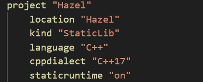
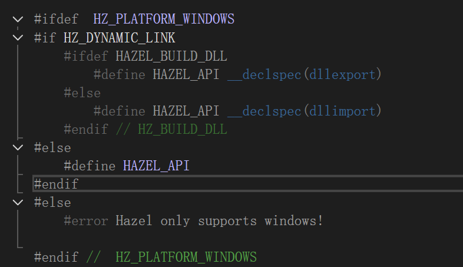

笔记16
静态库和无警告
首相我们要修改Hazel的链接方式为静态库，同时将premake.lua中的配置做如下的修改
- 将
kind中的SharedLib修改为StaticLib - 将
cppdialect "C++17"下方 - 删除导出dll的命令
- 将
staticruntime中的off修改为on - 将Sandbox也设置为链接静态运行时库，glfw等也是
- 同时各个premake尾部都设置为
静态运行时库 MT：使用静态运行时库，发布版本（Release）。 MTd ：使用静态运行时库，调试版本（Debug）。 动态运行时库 MD：使用动态运行时库，发布版本（Release） MDd：使用动态运行时库，调试版本（Debug）。解释为什么导出为动态库的项目不推荐链接静态时库，而导出为静态的库的推荐链接静态时库？
符号冲突和重复定义
当一个 DLL 项目链接到静态运行时库时，运行时库的代码和符号会被包含到 DLL 文件中。如果你将该 DLL 与其他链接了相同静态运行时库的应用程序或其他 DLL 一起使用，就会发生符号冲突和重复定义的问题。这是因为：
- 静态运行时库会包含一些全局变量和静态函数，这些符号会在多个地方被定义。
- 当多个模块（DLL 或应用程序）都静态链接相同的运行时库时，系统无法区分这些符号，导致链接错误或运行时问题。
运行时不兼容性
静态运行时库和动态运行时库有一些不同的实现和运行时环境：
- 静态链接库（如
/MT）会把运行时库直接包含到每个模块中，而这些模块各自维护自己的内存管理、异常处理和全局静态数据。- 动态链接库（如
/MD）则依赖于外部的共享运行时库，这样所有 DLL 和应用程序都共享同一个运行时环境，避免了内存分配、异常处理等方面的冲突。如果一个 DLL 静态链接了运行时库，而应用程序或其他 DLL 使用的是动态链接的运行时库，这就会导致：
- 内存管理不一致：动态和静态运行时各自维护不同的内存堆，导致内存泄漏或无法正确释放内存。
- 异常处理不一致：抛出异常时，如果 DLL 和应用程序使用不同的运行时库，异常可能会被不同的机制捕获，导致程序崩溃或未定义行为。
编译器设置不一致
如果一个项目使用静态运行时库，而其他依赖于该 DLL 的项目或应用程序使用动态运行时库（或者反之），则：
- 链接器设置可能不兼容，导致无法成功链接。
DLL 之间的共享问题
动态链接库是设计用来共享资源的，特别是共享运行时库。将静态运行时库链接到 DLL 会使得每个 DLL 拥有自己的运行时库副本，从而破坏了 DLL 之间的共享机制。这使得以下问题变得严重：
- 每个 DLL 维护自己的内存堆，导致跨 DLL 的内存分配和释放不一致。
- 跨 DLL 调用时，运行时行为（例如线程管理、全局状态、文件句柄等）可能不一致。
调试和更新的困难
如果 DLL 静态链接了运行时库，更新或调试时需要重新编译所有依赖该 DLL 的模块。如果 DLL 只是动态链接了运行时库，通常只需要更新 DLL 文件，而不需要重新编译其他模块。
在导出为 静态库 时，推荐链接 静态运行时库（例如
/MT或/MTd）避免与使用该静态库的其他模块发生冲突
当静态库使用动态运行时库（例如
/MD），最终使用的运行时库取决于 最终使用该静态库的项目，那么当不同的项目链接该静态库时，每个项目都会 独立地链接和使用不同的动态运行时库。如果有多个项目使用该静态库，而这些项目链接不同的运行时库，那内存分配就有很大的问题，内存管理等就会出问题。
而且不同运行时库之间维护的堆是独立的，静态库中可能会存在使用动态运行时库分配的内存，而如果调用方使用静态运行时库，则内存分配和释放可能会出错。
通过将静态库链接到 静态运行时库（如
/MT），所有使用该静态库的模块都会拥有相同的运行时环境，内存分配和异常处理等操作会在静态库和使用该库的模块之间保持一致，避免了冲突和内存管理不一致的问题。减少外部依赖
静态库是 直接嵌入 到目标可执行文件中的，因此它不依赖于外部的 DLL。在这种情况下，静态链接运行时库可以确保所有功能都在编译时内嵌在目标应用中。这样可以减少外部依赖，简化部署
如图修改HAZEL_API的定义，在core.h文件中
然后就是解决imgui库文件中不安全函数的警告了，显然这不是我们改处理的，这是别人的库，根据文件库中定义，只要定义一个宏即可避免这样的报错，在Hazel的premake中，记住这是imgui需要我们定义的。
个人还遇到切片报错，就是将一个子类对象直接赋给了父类，这就会导致子类独立实现的部分会被切掉，这就是切片问题。
解决方案：
- 使用指针或引用：避免切片的一种常见做法是使用指针或引用来持有基类和派生类对象，而不是直接赋值。
Base* b = new Derived(); // 使用指针
// 或者
Base& b = d; // 使用引用
使用智能指针：在现代 C++ 中，建议使用智能指针来管理动态分配的对象。例如：
std::unique_ptr<Base> b = std::make_unique<Derived>();
到此自己看看搞搞也差不多没啥报错和警告了。
- 最后修改了一下event的log问题，参照视频下方的评论，即使拉取的是最新的日志库，只需要在event.h下方补上这一段代码即可
template<typename T>
struct fmt::formatter<T, std::enable_if_t<std::is_base_of<Event, T>::value, char>>
: fmt::formatter<std::string>
{
auto format(const T& event, fmt::format_context& ctx)
{
return fmt::format_to(ctx.out(), "{}", event.ToString());
}
};
template <typename... T>
std::string StringFromArgs(fmt::format_string<T...> fmt, T&&... args)
{
return fmt::format(fmt, std::forward<T>(args)...);
}